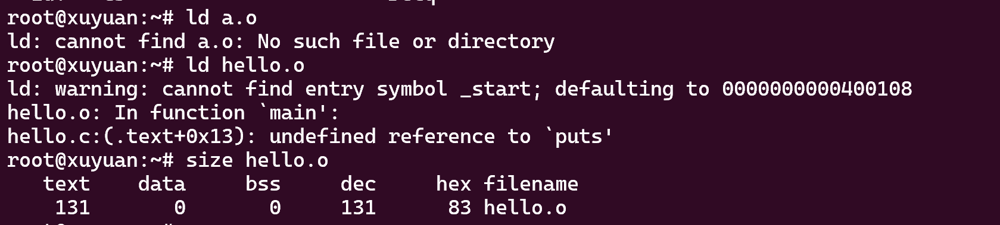
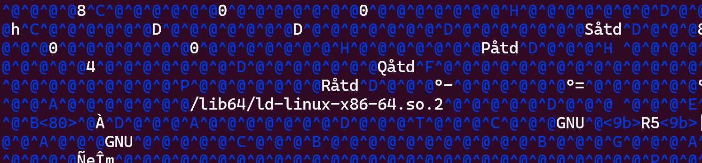
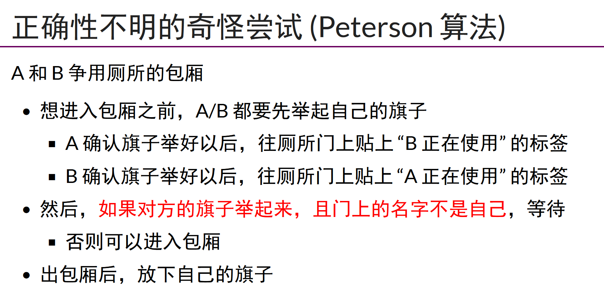
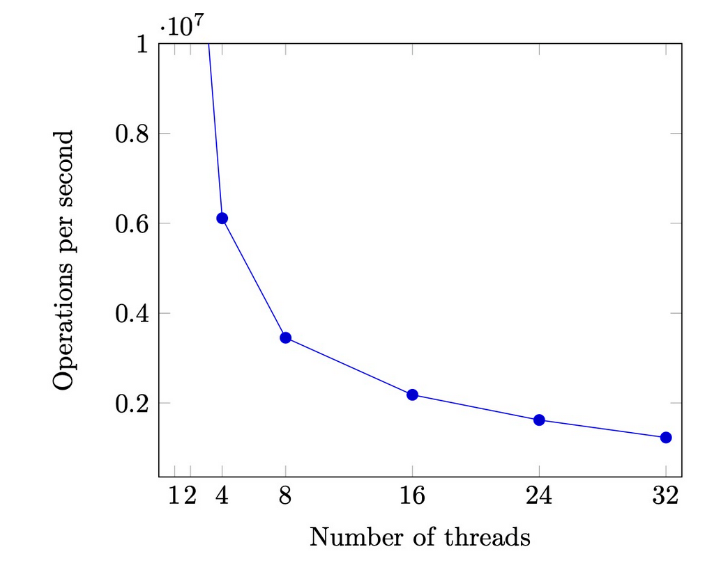

由于引导区空间有限，只有512个字节，故打算把程序编译成com文件，然后让DOS执行
nasm pmtest1.asm -o pmtest1.com
一些挂载问题：
1、写入空白内容：
dd if=/dev/null of=pm.img bs=512 count=1 conv=notrunc
2、使用 losetup 命令，将 data.img 作为 loop device 使用：
sudo losetup /dev/loop0 pm.img
3、然后，格式化这个 loop device：
sudo mkfs.msdos /dev/loop0
4、检查文件系统：
sudo fsck.msdos /dev/loop0
5、删除 loop device：
sudo losetup -d /dev/loop0
这时候，pm.img 已经格式化完成，可以作为一个软盘镜像使用。用file查看，结果为：
pm.img: DOS floppy 1440k, x86 hard disk boot sector
再次输入
sudo mount -o loop pm.img /mnt/floppy
6、挂载成功！！！
之后正常挂在就行
sudo cp pmtest1.com /mnt/floppy(先要在创建挂载文件夹，Ubuntu好像没有软盘驱动，中途换kali去了，也是基于Debian)
sudo umount /mnt/floppy
保护模式
从实模式跳转到保护模式
1.准备GDT（全局描述符表）
2.用lgdt加载gdtr
lgdt [GdtPtr]
3.打开A20,，试图访问到1MB上的内存
4.设置cr0的PE位，0变1
5.跳转，进入保护模式
jmp dword SelectorCode32:0
跳转目标是描述符DESC——CODE32对应段的首地址，即标号LABEL_SEG_CODE32处
P位，p=1表示段在内存中存在，p=0表示段在内存中不存在
DPL描述符特权级，特权级可以是0，1，2，3，数字越小特权级越大
S位，数据段/代码段描述符，系统段/门描述符
在保护模式下执行汇编代码mov ds:[si], ax的大致步骤如下：
首先CPU需要查找GDT在内存中位置，GDT的位置从GDTR寄存器中直接获取 然后根据DS寄存器得到目标段描述符的物理地址 计算出描述符中的段基址的值加上SI寄存器存储的偏移量的结果，该结果为目标物理地址 将AX寄存器中的数据写入到目标物理地址
C程序的状态机模型
状态=堆+栈
初始状态=main()的第一条语句
迁移=执行一条简单语句
状态机，取指令，执行
复习下gdb调试，大多数都快忘光了
pwngdb调试：start;b <断点>；r;layout asm(二进制调试);si执行一条指令；x $rbp;si;rbp寄存器值改变；wa $rax监控断点
程序？
程序是一个状态机，初始状态：如果没有指定，从PC开始执行，线性，分叉（如rand），程序执行的结果不是唯一的
一条特殊的指令syscall(),进入内核模式，把….交给操作熊，任其修改，程序=计算+syscall()
如何写一个最小的hello，world程序?

强行编译+链接
ld失败，把main改成_start
但是Segmentation Fault，retq就是把rsp加8，调试发现是初始状态无法返回
解决办法：syscall
#include <sys/syscall.h>
int main() {
syscall(SYS_exit, 42);
}
man syscall

系统调用参数，如在x86-64，syscall放在rax,rax,rdx，终于明白pwn的payload如何构造了
一些有趣的终端命令
telnet towel.blinkenlights.nl 放电影
dialog --msgbox 'Hello' 8 32
ssh sshtron.zachlatta.com(贪吃蛇)
编译器
c代码状态机（有些地方不可优化，如系统调用是不可优化的），汇编代码状态机，如何切换?
C=compile(S)
正确的编译？把C代码中不可优化的部分都被正确的翻译到汇编上
xxd:Linux查看二进制代码
常见应用程序
程序是状态机视角
GNU Coreutils/busybox ->系统/工具程序(apt,ssh,vim) ——>应用程序
QA：Hello World C程序执行的第一条指令在哪里?
/lib64/ld-linux-x86-64.so

可以自行修改哈
strace追踪
strace f.out
strace -f gcc -c f.c
gcc --verbose
并发
Human beings are sequential agents
单线程每一步都是确定的
多线程：全局变量和堆区共享，有几个独立的栈帧链，线程：每个栈帧里都有PC和其他局部变量，并发系统每一步都不确定，switch选择线程1/2/3……?
Human beings are sequential creature.
top显示CPU使用情况
是不是线程共存内存？
#include "thread.h"
int x = 0;
void Thello(int id) {
usleep(id * 100000);
printf("Hello from thread #%c\n", "123456789ABCDEF"[x++]);
}
int main() {
for (int i = 0; i < 10; i++) {
create(Thello);
}
}
改变int x=0局部or全局，可以看到不一样的输出
如何证明线程具有独立堆栈？
#include "thread.h"
__thread char *base, *cur; // thread-local variables
__thread int id;
// objdump to see how thread-local variables are implemented
__attribute__((noinline)) void set_cur(void *ptr) { cur = ptr; }
__attribute__((noinline)) char *get_cur() { return cur; }
void stackoverflow(int n) {
set_cur(&n);
if (n % 1024 == 0) {
int sz = base - get_cur();//栈底和栈顶区别
printf("Stack size of T%d >= %d KB\n", id, sz / 1024);
}
stackoverflow(n + 1);//无限制的创建栈
}
void Tprobe(int tid) {
id = tid;
base = (void *)&tid; //指向tid地址
stackoverflow(0);
}
int main() {
setbuf(stdout, NULL);
for (int i = 0; i < 4; i++) {
create(Tprobe);
}
}
多线程执行，同时访问相同的共享变量，会出问题
原子性的丧失
如何把程序限制到单处理器上？
单处理器多线程
- 线程在运行时可能被中断，切换到另一个线程执行
多处理器多线程
- 线程根本就是并行执行的
printf还能在多线程调用吗？
printf不会在多线程中出现问题，比如一个字符插入另一个字符，因为有缓冲区，不是puts
asm volatile("":::“memory”)插入汇编指令，告诉汇编器不要优化，别的线程可能读写内存
并发程序最大的麻烦？
mem-ordering.c
flag=0或1，通过异或算法，来决定执行哪个
./mem-ordering |head -n 10000 |sort |uniq -c
现代处理器
动态编译器
单个处理器把汇编代码编译成更小的uops
fetch->issue（可以同时）->execuite->commit
在任何时刻，处理器都维护一个uop的池子，每一周期向池子补充尽可能多的uop，执行尽可能多的uop，这也是乱序执行的原因
多处理器间即使可见性的丧失
如果写x发生cache miss，延迟写入，执行下一条指令
“mfence”保证多处理器之间的一致性，只有写入内存，才能执行下一条语句
总结
并发程序=多个执行流，共享内存的状态机，c语言执行流
thread.h=create+join
并发执行不原子，能乱序。不立即可见
现代处理器就是动态数据分析器，指令流，数据流，只要做出相应的应对，就能跑的快
互斥：保证两个线程不能同时执行一段代码
利用锁，互斥锁，同一时间只有一个线程持有锁，线程在进入临界区前必须先获取锁，线程在离开临界区后必须释放锁，必须确保同一时间只有一个线程能狗执行临界区代码
Peterson算法
store()改变状态，赋值
load()看
int x = 0, y = 0, turn = A;
void TA() {
while (1) {
/* PC=1 */ x = 1;
/* PC=2 */ turn = B;
/* PC=3 */ while (y && turn == B) ;
critical_section();
/* PC=4 */ x = 0; } }
void TB() {
while (1) {
/* PC=1 */ y = 1;
/* PC=2 */ turn = A;
/* PC=3 */ while (x && turn == A) ;
critical_section();
/* PC=4 */ y = 0; } }
QA：如何保证两个人能安全的上厕所，只有store（）和load()两个动作？

模拟算法（PC1,PC2,X,Y,turn）
modef-checker.py
不断试图进入临界区，只要变量是锁着的，就执行死循环，如果不是，就锁上，进入临界区，出临界区，把锁删掉
在共享内存上实现互斥
实现互斥的根本困难：公理系统不允许同时读/写共享内存，即load()和store()不能同时执行
解决：假设硬件能为我们提供一条“瞬间完成”的读写指令
实现互斥的协议？
一条exchange协议，0/1状态转变
int table =yes;
void lock(){
retry:
int got = xchg(&table,NOPE);
if (got == NOPE)
goto retry;
assert(got == YES);
}
void unlock(){
xchg(&table,YES)
}
int locked =0;
void lock(){while (echg(&locked,1));}
void unlock(){xchg(&locked,0);}
注意model-checker工作的检验
原子指令的模型
保证lock指令有顺序并能按顺序执行，后面的线程能看见前面的线程，保证之前的store都写入内存，保证load/store不与原子指令乱序
atomic test-and-set
lock xchg
reg=load(x);if (reg==XX){store(x,XX)}
lock add
t=load(x);t++;store(x,t)
一读一写
load,exec,store
LOAD-Reserved/Store-Conditional
打标记
int cas(int *addr, int cmp_val, int new_val) {
int old_val = *addr;
if (old_val == cmp_val) {
*addr = new_val; return 0;
} else { return 1; }
}
自旋锁的缺陷
每个CPU上不同线程，可以切换，除了进入临界区的线程，其他处理器上的线程都在空转，获得自旋锁的线程可能被操作系统切换出去
自旋 (共享变量) 会触发处理器间的缓存同步，延迟增加
同一份计算任务，时间 (CPU cycles) 和空间 (mapped memory) 会随处理器数量的增长而变化。

自旋锁的好处
- 更快的 fast path
- xchg 成功 → 立即进入临界区，开销很小
- 更慢的 slow path
- xchg 失败 → 浪费 CPU 自旋等待
自旋锁的使用场景
no：
- 持有自旋锁时禁止执行流切换(很危险的操作)？
- 临界区几乎不拥堵？
操作系统可以操纵关中断和抢占，保证锁的持有者在很短的时间呢你可以释放锁
如何实现一个很长的临界期？
把锁的实现放到操作系统里就好啦！
-
syscall(SYSCALL_lock, &lk);- 试图获得
lk，但如果失败，就切换到其他线程
- 试图获得
-
syscall(SYSCALL_unlock, &lk);- 释放
lk，如果有等待锁的线程就唤醒
- 释放
融合自旋锁和互斥锁的好处？
Futex
Fast path: 一条原子指令，上锁成功立即返回
Slow path: 上锁失败，执行系统调用睡眠
线程库里的锁绝大情况下不会启动系统调用，而是原子调用
总结
QA：如何在多处理器上实现互斥？
在多处理器系统上实现互斥是确保多个处理器或核心在访问共享资源时不会发生冲突的关键，利用锁
并发控制
QA:如何在多处理器上协同多个线程完成任务？
同步：两个或两个以上随时间变化的量在变化过程中保持一定的相对关系
并发程序中的同步：在某个时间点共同达到互相已知的状态
生产者-消费者问题
括号匹配
左括号：生产资源，放入队列
右括号：从队列取出资源执行
#include "thread.h"
#include "thread-sync.h"
int n, count = 0;
mutex_t lk = MUTEX_INIT();
void Tproduce() {
while (1) {
retry:
mutex_lock(&lk);
if (count == n) {
mutex_unlock(&lk);
goto retry;
}
count++;
printf("(");
mutex_unlock(&lk);
}
}
void Tconsume() {
while (1) {
retry:
mutex_lock(&lk);
if (count == 0) {
mutex_unlock(&lk);
goto retry;
}
count--;
printf(")");
mutex_unlock(&lk);
}
}
int main(int argc, char *argv[]) {
assert(argc == 2);
n = atoi(argv[1]);
setbuf(stdout, NULL);
for (int i = 0; i < 8; i++) {
create(Tproduce);
create(Tconsume);
}
}
如果不为空，就取出右括号执行，如果不满，就放左括号
改进，join()阻塞进程直至线程完成
Conditional Variables
#include "thread.h"
#include "thread-sync.h"
int n, count = 0;
mutex_t lk = MUTEX_INIT();
cond_t cv = COND_INIT();
void Tproduce() {
while (1) {
mutex_lock(&lk);
if (count == n) {
cond_wait(&cv, &lk);
}
printf("("); count++;
cond_signal(&cv);
mutex_unlock(&lk);
}
}
void Tconsume() {
while (1) {
mutex_lock(&lk);
if (count == 0) {
pthread_cond_wait(&cv, &lk);
}
printf(")"); count--;
cond_signal(&cv);
mutex_unlock(&lk);
}
}
int main(int argc, char *argv[]) {
assert(argc == 2);
n = atoi(argv[1]);
setbuf(stdout, NULL);
for (int i = 0; i < 8; i++) {
create(Tproduce);
create(Tconsume);
}
}
两个消费者，一个生产者，什么时候会出现问题，应该是一个consumer在不该wakeup的时候？())同类唤醒
assert()检查
获取互斥锁，如果不满足条件，则调用cond_wait进入等待状态，并释放互斥锁，满足条件执行后，释放锁，cond_signal()唤醒另一个进程
哲学家吃饭问题
- 吃饭需要同时得到左手和右手的叉子
- 当叉子被其他人占有时，必须等待，如何完成同步？
- 如何用互斥锁/信号量实现？
失败的尝试
#include "thread.h"
#include "thread-sync.h"
#define N 3
sem_t locks[N];
void Tphilosopher(int id) {
int lhs = (N + id - 1) % N;
int rhs = id % N;
while (1) {
P(&locks[lhs]); //上锁，得到叉子
printf("T%d Got %d\n", id, lhs + 1);
P(&locks[rhs]);
printf("T%d Got %d\n", id, rhs + 1);
V(&locks[lhs]);
V(&locks[rhs]);
}
}
int main(int argc, char *argv[]) {
for (int i = 0; i < N; i++) {
SEM_INIT(&locks[i], 1);//初始化为1
}
for (int i = 0; i < N; i++) {
create(Tphilosopher);
}
}
问题：死锁？
分布式算法：如果所有人叉子都在右手上，没有人叫醒程序，线程不会进展
mutex_lock(&mutex);
while (!(avail[lhs] && avail[rhs])) {
wait(&cv, &mutex);
}
avail[lhs] = avail[rhs] = false; //放下两个叉子
mutex_unlock(&mutex);
mutex_lock(&mutex);
avail[lhs] = avail[rhs] = true;
broadcast(&cv);
mutex_unlock(&mutex);
Master-slave：让一个人管理叉子
void Tphilosopher(int id) {
send_request(id, EAT);
P(allowed[id]); // waiter 会把叉子递给哲学家
philosopher_eat();
send_request(id, DONE);
}
void Twaiter() {
while (1) {
(id, status) = receive_request();
if (status == EAT) { ... }
if (status == DONE) { ... }
}
}
延伸思考，如果觉得单线程管理太慢，可以分批给多个线程管理，但这些现成的管理资源要独立
防御性编程
利用assert()
CHECK_INT(waitlist->count, >= 0);
CHECK_INT(pid, < MAX_PROCS);
CHECK_HEAP(ctx->rip); CHECK_HEAP(ctx->cr3);
检查PID，是否在堆区
死锁：线程互相等待